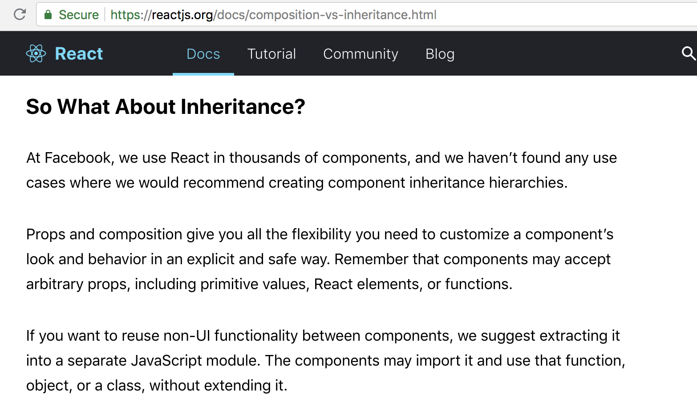
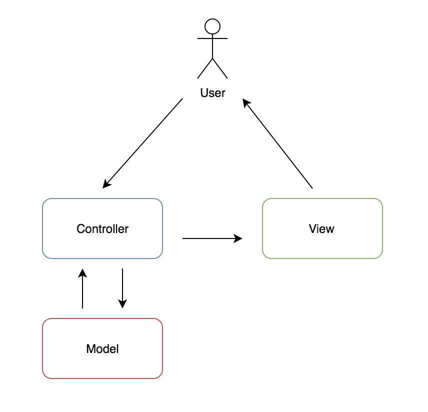
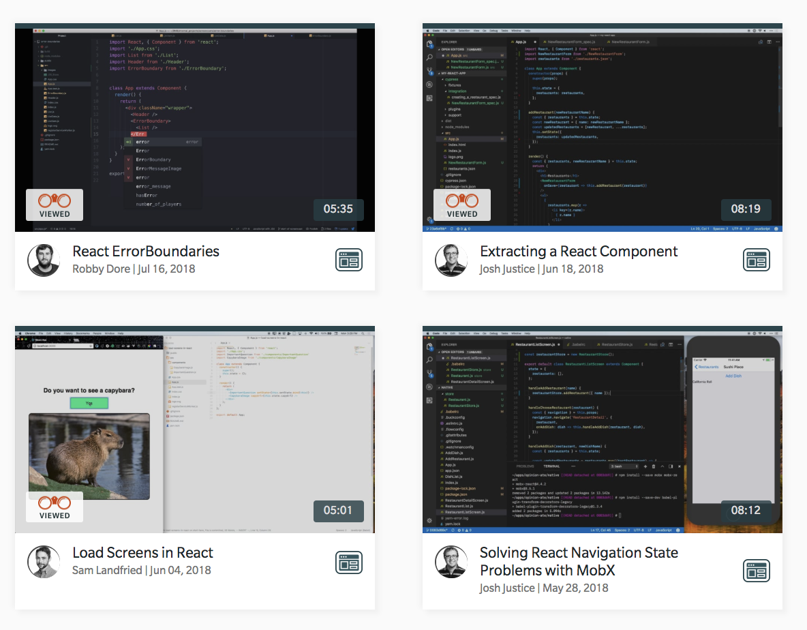

class: center, middle # React Design Patterns <img src='react.svg' className="App-logo" alt="react-logo" /> --- # Hello World! <div height="300px"> </div> ??? (2 min) 1. BNR 2. ...is Hiring (JS positions and internship) 3. Me - web dev, use mostly react (some vue/angularJS experience) coding for two years post-bootcamp --- # Flow - Component Hierarchy - Functional Programming in React - Component Structure and Patterns - Stateless Functional Components - Higher Order Components - Functions as Child Components - Render Props ??? Here's the flow of the talk, we'll first discuss the underlying component structure of React and then get into the various patterns that can be undercovered from such a foundation. React makes it intuitive to code in a very "FP" or functional way and this means we can build applications that are composed of various designs and component structures. These include: --- # React Component Hierarchy <img src="./react-flow.png" height="300px"> ??? (5 min) This is the basis of patterns that emerge. React components are functions that accept data and return UI. - Unidirectional Data Flow - parent -> Child (pass data via props, actions flow up) --A React component can control how another component is rendered by providing props to it, and even control whether it is rendered at all. Componentization because: - Abstraction - so one unit doesn't leak into another unit. - Reusable, modular code encapsulated in each component --- # React Component Structure - Composition > Inheritance - components are unique, not based off a chain of inheritance - *one exception - extending all components from `React.Component` - it is bad practice to inherit from other components - single responsibility principle ??? (10 min) Theory Only, not examples you compose a component from react, from props - try to think of making a composable function (that inputs data and outputs UI). - help you create more reusable functions in your code, reducing duplication, testing, and bugs - Composition: To achieve truly reusable features...combining two or more different abstractions into a new one. - SRP: a component should ideally only do one thing. If it ends up growing, it should be decomposed into smaller subcomponents. - Divide components into stateful “containers” and stateless “presenters”. --- # Composition Over Inheritance  ??? facebook's official react docs explicitely say to favor composition over Inheritance read 2nd paragraph --- # Functional Programming Programming Paradigm - composing pure functions, avoiding shared state, mutable data, and side-effects. - Declarative rather than imperative - Application state flows through pure functions ??? Contrast with object oriented programming, where application state is usually shared and colocated with methods in objects. - Have a total control of the data flow - Achieve isolation of concerns - Achieve reusability in our software - Improve readability - Declarative programs abstract the flow control process, and instead spend lines of code describing the data flow: *What to do*. The how gets abstracted away. Imperative focuses on how. --- # Functional Programming in React - By sticking to FP principles, you will end up with simple reusable components/functions that can ]be composed together. - modular, single-responsibility, composable, pure/no sode-effects ??? Ideally, your application should be composed of pure functions whose data are treated as immutable. That means they’re not modifying their upper scope and you’re thus free to reuse them in any part of your program. Each function should be responsible for a single task and should be separated from the other ones. You can use them as they are or you can compose them together to achieve more complex behavior. --- # React Component Structure Patterns in Practice - Stateless Functional Components - versus Stateful components (one extends react.component and inherits all its functions, one is just a function) - Separate logic from presentation in your components. ??? So these theories sound great, but how do you use these principles in practice? in React, UI is a function of data. Stateless FC are a pure *FP* function of data from parent props! - Seperation of concerns here, for more reusability --- # Away from MVC  ??? At this point, we have talk of our UI, our view, logic, and we know react also needs to handle the state of our application. These sound like all the things an application pattern like MVC used to be concerned with. So why don't we ever hear about MVC anymore with React? First, let's review the MVC pattern. <explain diagram> --- # Away from MVC - Unidirectional Data Flow Patterns instead - _but_ MVC in concept is not completely dead! <hr/> - M = app state, redux/state libraries - V = anything inside a component's `render()` function - C = other functions/the logic of a component ??? How MVC dominated the frameworks. Now, not so much, but MVC's principles are still there - React effectively ends up reimplementing MVC within the view layer - React is a view layer, it shouldn't force a particular architecture on the rest of your application - next slide transition: Any react design patterns that we implement as FEDs, arise and emerge from the underlying architecture, so it's very important that we understand that. Now, let's look at some of these designs that do emerge from this architecture! --- # Stateless Functional Components - No state, not an extension of React.Component, they’re just functions. ```js const Greeting = () => <div> Hello! </div> ``` <hr/> ```js const GreetingWithNameProp = (props) => <div> Hello {props.name}! </div> class ClassComponent extends React.Component { render() { return <GreetingWithNameProp name="Anna"/> } } ``` ??? Presentation vs. Container (Logic) Components -This is a powerful pattern for providing fetching and providing data to SFCs - what you'll often see is stateFUL container components (logic/network requests...) that render stateLESS functional components as children. So they are more reusable. As they only know and rely on whatever data their parent tells them via props. - 'dumb' (vs smart) - smart meaning, a class component has access to local state, lifecycle methods - prez/ui/style vs logic --- # Higher Order components - Higher-Order Components (HOCs) - functions that take at least one component as a parameter and return another component - _do not_ return UI - Usually it adds props to the passed component after doing some work. ??? (10 min) - A higher-order component is actually not a component, it is a *function* . - As you build React applications, you will run into situations where you want to share the same functionality across multiple components. - A HOC function takes a component as an argument and returns a component. It transforms a component into another component and adds additional data or functionality. - input: component -> oputput: component *--vs--* component -> UI - we've already seen container components, this is similar, just wrapped as a function --- # Higher Order Components ```js const NewComponent = (BaseComponent) => { // ... create new component from old one and update return UpdatedComponent } ``` ??? --- # Higher Order components ```js const Greeting = ({ name }) => { if (!name) { return <div> Loading... </div> } return <div> Hi { name} ! </div> } ``` ```js const Loading = (InputComponent) => { class extends React.Component { constructor() { super() this.state = { name: "" } } componentDidMount() { // this would fetch or connect to a store this.setState({ name: "Anna" }) } render() { return <InputComponent { ...this.props } name={ this.state.name }/> } } } ``` ??? This is just a function that returns component that renders the component we passed as an argument. Last step, we need to wrap our our Greeting component in Connect. (next slide) This is a powerful pattern for providing fetching and providing data to any number of stateless function components. Useful for re-using the wrapper component (HOC) with various/multiple inputs. FP! --- # Higher Order Components ```js const HigherOrderComponent = Loading(Greeting) ``` ??? Last step, we need to wrap our our Greeting component in Connect. --- # Higher Order Components Commonly used examples: - React Router connect() ```js import { connect } from 'react-redux'; ... export default connect(mapStateToProps, mapDispatchToProps)(ArticleComponent); ``` - ReactRouter WithRouter() ```js import { withRouter } from 'react-router'; ... export default withRouter(MyComponent); ``` ??? - Two HOC’s implementations that you may be familiar with in the React ecosystem are connect from Redux and withRouter from React Router. - The connect function from Redux is used to give components access to the global state in the Redux store, and it passes these values to the component as props. - The withRouter function injects the router information and functionality into the component, enabling the developer access or change the route. - A HOC should be a pure function with no side-effects. It should not make any modifications and just compose the original component by wrapping it in another component. --- # Higher Order Components Possible Use Cases: - Managing state of logged in users - Extend Data-Fetching "Smart" Containers - lists - infinite scrolls in multiple different views with different data - Loaders - Error handling ??? repeated logic in many components. Containers - It’s fairly common to have a container component, which fetches data, and renders a list of components using that data. We can combine this with other HOCs such as: hasloader ,hasError, andhasDefault to extend functionality further. HOCs can help in simplifying and abstracting repeated logic in a React Applications. HOC = HO Functions, so functional programming is apparent! Higher-Order Components do not have to be scary. After understanding the basics, you can put the concept to use by abstracting away functionalities that can be shared among different components. --- # Functions as Child Components ```js <div> { ( ) => { return "hello world!" } () } </div> ``` ??? - nothing inherently useful or mind-breaking here, but give way to the pattern we'll talk about next, render props: - The components which implement this pattern could be called render prop components. --- # Functions as Child Components ```js const Height = ({ children }) => children( 500 ) const Foo = () => { return ( <Height> { ( height ) => <div> window is { height } px </div> } </Height> ) } ``` - output: `<div> window is 500 px</div>` ??? - useful for conditional rendering, allowing the parent to hold the code that makes the rendering decision vs. the child. --- # Render Props - A function prop that a component uses to know what to render. - Seperate the state of your component from how it’s rendered to allow for total flexibility of the UI without increasing complexity of the implementation. - pass a render function as a prop from parent to child component ```js const HOC = returnAComponent(View); class App extends Component { render() { return ( <HOC render={ ( props ) => <View {...props} />} /> ); } } ``` ??? (5 min) But why is it called render prop? Historically the pattern evolved from using a prop called render (or anything else) for it. Basically the component uses a render prop instead of a children as a function now. More generally speaking, the idea is this: instead of “mixing in” or decorating a component to share behavior, just render a regular component with a function prop that it can use to share some state with you. - inverted sharing of state. The child component exposes it's internal state to it's parent when the parent calls it's render prop - And there’s absolutely no ceremony required to use a render prop because you’re not wrapping or decorating some other component. It’s just a function! --- # Render Props - Components that use the “render prop” pattern invert control of rendering from the component itself to the consumer by accepting the render function as a prop. - Any prop that is a function, that a component uses to know what to render, is technically a “render prop”. - The prop doesn't explicitly need to be called `render()` ??? - I've never used this pattern, personally, but libraries I've used that use it include - react router - They use render props in place of HOCs for more control. --- # That's a wrap React favors composition over inheritance Functional Programming favors pure, immulatable functions with no side side-effects React Design is Functional Uni-directional Data Flow - child is a function of parent and the data it recieves from parent - Stateless vs. Stateful components More Complex Patterns - Higher Order Components - component that returns another component (vs. some UI) - Functions as Child Components - Render Props Pattern - child component that has a literal render prop (function) from the parent - seperation of your component's state from it's render implementation. ??? Unidirectional data flow enables simple patterns like the stateful parent and stateless child - review each pattern - emphasize design principles --- # Resources - https://reactjs.org/docs/design-principles.html - https://css-tricks.com/what-are-higher-order-components-in-react - https://reactjs.org/docs/composition-vs-inheritance.html - https://cdb.reacttraining.com/use-a-render-prop-50de598f11ce - https://medium.com/javascript-scene/master-the-javascript-interview-what-is-functional-programming-7f218c68b3a0 - https://hackernoon.com/react-composition-patterns-from-the-ground-up-8401aaad93d7 ??? I will link to the slides on the meeetup page and twitter, so you can get them there --- # Freebie! - Frontier by BNR ................. https://thefrontier.bignerdranch.com - 14 Day Free trial PLUS one extra month free - coupon code: WWC2018 <div style="margin:auto; width: 100%; text-align: center"> </div> ??? The Frontier is a screencast site with bite-size video tutorials - Watch expert developers solve real-world problems beyond the basics. - intermediate/advanced level screencasts - little “nuggets of knowledge” - web / ios / android - basically 45 days free --- # Freebie! <div style="margin:auto; width: 100%; text-align: center">  </div> ??? There are several intermediate react videos on the frontier, including some about the Error handling with error boundaries, Extracting and modularizing a React Component, and some about handling global state in your react app. --- # <div style="float: right"><h3>@annasedlar</h3></div> ??? Thank you so much, it was a pleasure to be here As I said, after having used react for several projects at work and personally, once you start to internalize the flow and functional style of react, these patterns emmerge as best practices, so it's my hope that learning the patterns up front can speed up the learning process for anyone who is curious! If you have any questions, I'll be up front, feel free to come chat! (40 minutes total)